| Outcome | RCT | NRSI | GRADE | Effect | Est (CI) | New RCT | New NRSI | Old Est (CI) | GRADE Δ |
|---|---|---|---|---|---|---|---|---|---|
| Delirium | 8 | Low | RR | 0.94 (0.62–1.43) | 2 | 0.81 (0.59–1.12) | No | ||
| 5 | Very low | OR | 1.01 (0.39–2.63) | 2 | 0.61 (0.27–1.36) | No | |||
| Delayed neurocognitive recovery | 6 | Moderate | RR | 0.72 (0.57–0.91) | |||||
| 1 | Very low | RR | 0.74 (0.44–1.24) | ||||||
| Postoperative neurocognitive disorder | 3 | Very low | RR | 1.09 (0.72–1.66) | 1 | 1.15 (0.68–1.95) | No | ||
| Physical function | none | none | |||||||
| Complications | 10 | 9 | Low/very low | See Below | 2 | 4 | |||
| Patient satisfaction | 3 | Low | RR | 1.39 (1.19–1.63) | |||||
| Length of stay (days) | 5 | Very low | MD | 0.0 (-1.5 to 1.4) | 1 | 0.2 (-1.0 to 1.4) | No | ||
| 4 | Very low | MD | -0.6 (-2.4 to 1.5) | 1 | -0.2 (-2.0 to 1.5) | No | |||
| Discharged to institution | 1 | Very low | RR | 1.46 (0.69–3.41) | 1 | ||||
| Mortality (in-hospital and 30-day) | 4 | Very low | RR | 1.16 (0.47–2.89) | 1.17 (0.34–4.08)a | ||||
| 5 | RD/1000 | 4.1 (-8.4 to 16.7) | |||||||
| 7 | Very low | OR | 0.93 (0.47–1.85) | 2 | 0.87 (0.32–2.41)b | No | |||
| RD/1000 | -0.8 (-6.5 to 10.2) | ||||||||
| Mortality (1-year) | 1 | 1 | Very low | RR | 1.47 (0.42–5.18) | 1 | 2.0 (0.19–21.3) | No | |
| RD/1000 | 24.2 (-46.5 to 95.0) | 23 (-53 to 98) | |||||||
| RCT: randomized controlled trial; NRSI: non-randomized study of intervention; GRADE: Grading of Recommendations Assessment, Development and Evaluation; Est: effect estimate; CI: confidence interval; RR: risk ratio; MD: mean difference; RD: risk difference. | |||||||||
| a Corrected model fitting parameter. | |||||||||
| b Risk ratio. | |||||||||
TIVA versus Inhaled Anesthesia
Updates
2024-03-05
| Date | Modification |
|---|---|
| 2024-03-05 | 11 studies (7 RCTs and 4 retrospective cohort studies added from updated search. |
| Updated relevant analyses, tables, and evidence summaries (GRADE) as appropriate. | |
| Revised complications meta-analyses and corrected error when adjusted odds ratios from non-randomized studies were incorporated (propensity, multivariable). Resulted in some small numerical differences, but are now consistent with published results from individual studies. | |
| Hypotension and bradycardia separated from other cardiac complications. | |
| Included additional detail pertaining to meta-analysis methods where appropriate. | |
| 2024-03-07 | Added summaries of study and patient characteristics to appendix. |
| Outcome | RCT | NRSI | GRADE | Effect | Est (CI) | New RCT | New NRSI | Old Est (CI) | GRADE Δ |
|---|---|---|---|---|---|---|---|---|---|
| Myocardial infarction | 1 | 5 | Low | OR | 0.90 (0.85–0.96) | 2 | 0.90 (0.87–0.94) | Very low→Low | |
| 2 | 5 | RD/1000 | -1.9 (3.0 to -0.7) | 2 | -1.9 (-2.7 to -1.2) | ||||
| Cardiac arrest | 1 | 1 | Very low | RR | 3.47 (0.57–21.2) | ||||
| RD/1000 | 1.7 (-0.7 to 4.1) | ||||||||
| Bradycardia | 4 | 1 | Very low | RR | 1.57 (0.42–5.81) | 1 | 1.47 (0.50–4.29) | No | |
| RD/1000 | 13.4 (-43.1 to 69.9) | 1 | 11.5 (-27.9 to 51.0) | ||||||
| Hypotension | 2 | 2 | Very low | RR | 0.99 (0.91–1.07 | 4 | not included | New | |
| RD/1000 | -24.6 (-58.6 to 9.4) | 4 | |||||||
| Stroke | 1 | 1 | Very low | OR | 1.14 (0.73–1.78) | 1 | not included | New | |
| RD/1000 | 0.62 (-1.23 to 3.49) | 1 | |||||||
| Acute kidney injury | 1 | 5 | Low | OR | 0.99 (0.88–1.11) | 2 | 1.00 (0.92–1.08) | Very low→Low | |
| RD/1000 | -0.05 (-0.61 to 0.57) | 2 | |||||||
| Pneumonia | 3 | 2 | Low | OR | 0.80 (0.39–1.64) | 2 | 0.74 (0.40–1.46) | Low→Very low | |
| RD/1000 | -7.1 (-21.8 to 21.8) | 2 | -4.3 (-14.1 to 5.6) | ||||||
| Pulmonary edema | 2 | Very low | — | — | 1 | ||||
| Pulmonary embolism | 2 | 3 | Very low | OR | 1.32 (1.13–1.53) | 1 | 1.29 (1.09–1.54) | No | |
| RD/1000 | 0.33 (0.14 to 0.57) | 1 | 0.30 (0.09 to 0.54) | ||||||
| Respiratory failure | 2 | 2 | Very low | OR | 0.87 (0.79–0.95) | 2 | 0.85 (0.76–0.94) | No | |
| RD/1000 | -0.53 (-0.82 to -0.20) | 2 | -0.53 (-0.83 to -0.19) | ||||||
| RCT: randomized controlled trial; NRSI: non-randomized study of intervention; GRADE: Grading of Recommendations Assessment, Development and Evaluation; Est: effect estimate; CI: confidence interval; RR: risk ratio; OR: odds ratio; RD: risk difference. | |||||||||
Key Question
Among older patients undergoing surgery with general anesthesia, does the use of intravenous agents for maintenance of anesthesia improve postoperative outcomes compared with inhaled agents?
Balance Tables
| Outcome | RCT | NRSI* | TIVA | Inhaled | GRADE† | Effect | Estimate (95% CI) |
|---|---|---|---|---|---|---|---|
| N (Total) | N (Total) | ||||||
| Delirium | 8 | 143 (1,001) | 158 (995) | RR | 0.94 (0.62–1.43) | ||
| 5 | 10,297 (142,850) | 32,955 (427,929) | OR | 1.01 (0.39–2.63) | |||
| Delayed neurocognitive recovery | 6 | 129 (800) | 181 (800) | RR | 0.72 (0.57–0.91) | ||
| 1 | 24 (160) | 24 (119) | RR | 0.74 (0.44–1.24) | |||
| Postoperative neurocognitive disorder | 3 | 40 (252) | 32 (207) | RR | 1.09 (0.72–1.66) | ||
| Physical function | none | none | |||||
| Complications | 10 | 9 | See below | ||||
| Patient satisfaction | 3 | 90 (109) | 82 (141) | RR | 1.39 (1.19–1.63)‡ | ||
| Length of stay (days) | 5 | (1,343) | (1,341) | MD | 0.0 (-1.5 to 1.4) | ||
| 4 | (147,809) | (432,893) | MD | -0.6 (-2.4 to 1.5) | |||
| Discharged to institution | 1 | 8 (9) | 26 (20) | RR | 1.46 (0.69–3.41) | ||
| Mortality (in-hospital and 30-day) | 4 | 11 (377) | 8 (375) | RR | 1.16 (0.47–2.89) | ||
| 5 | 11 (566) | 8 (565) | RD/1000 | 4.1 (-8.4 to 16.7) | |||
| 7 | 1,876 (149,333) | 5,175 (434,640) | OR | 0.93 (0.47–1.85) | |||
| RD/1000 | -0.8 (-6.5 to 10.2)§ | ||||||
| Mortality (1-year) | 1 | 1 | 5 (64) | 4 (70) | RR | 1.47 (0.42–5.18) | |
| RD/1000 | 24.2 (-46.5 to 95.0) | ||||||
| RCT: randomized clinical trial; NRSI: nonrandomized studies of interventions; GRADE: Grades of Recommendation, Assessment, Development, and Evaluation; RR: risk ratio; MD: mean difference; RD: risk difference. | |||||||
| * Results from nonrandomized designed shown only when evidence not available from randomized trials. | |||||||
| † Very low: ⨁◯◯◯; Low: ⨁⨁◯◯; Moderate: ⨁⨁⨁◯; High: ⨁⨁⨁⨁. | |||||||
| ‡ Comparing higher/highest category or categories with lower ones. | |||||||
| § Approximate based on the event rate in the inhaled anesthetic arms and the risk ratio calculated from the odds ratio. | |||||||
| Outcome | RCT | NRSI | TIVA | Inhaled | GRADE* | Effect | Estimate (95% CI) |
|---|---|---|---|---|---|---|---|
| N (Total) | N (Total) | ||||||
| Myocardial infarction | 1 | 5 | 4,027 (157,987) | 8,898 (443,067) | OR | 0.90 (0.85–0.96) | |
| 2 | 5 | 4,027 (158,031) | 8,898 (443,111) | RD/1000 | -1.9 (3.0 to -0.7)† | ||
| Cardiac arrest | 1 | 1 | 5 (1,972) | 1 (1,799) | RR | 3.47 (0.57–21.2)‡ | |
| RD/1000 | 1.7 (-0.7 to 4.1)‡ | ||||||
| Bradycardia | 4 | 1 | 20 (416) | 16 (416) | RR | 1.57 (0.42–5.81) | |
| RD/1000 | 13.4 (-43.1 to 69.9) | ||||||
| Hypotension | 2 | 2 | 226 (919) | 237 (884) | RR | 0.99 (0.91–1.07 | |
| RD/1000 | -24.6 (-58.6 to 9.4) | ||||||
| Stroke | 1 | 1 | 37 (9,320) | 42 (9,319) | OR | 1.14 (0.73–1.78) | |
| RD/1000 | 0.62 (-1.23 to 3.49)† | ||||||
| Acute kidney injury | 1 | 5 | 823 (144,819) | 2,283 (430,321) | OR | 0.99 (0.88–1.11) | |
| RD/1000 | -0.05 (-0.61 to 0.57)† | ||||||
| Pneumonia | 3 | 2 | 293 (9,264) | 335 (9,270) | OR | 0.80 (0.39–1.64) | |
| RD/1000 | -7.1 (-21.8 to 21.8)† | ||||||
| Pulmonary edema | 2 | 0 (143,939) | 3 (428,897) | — | —§ | ||
| Pulmonary embolism | 2 | 3 | 212 (153,413) | 465 (438,369) | OR | 1.32 (1.13–1.53) | |
| RD/1000 | 0.33 (0.14 to 0.57)† | ||||||
| Respiratory failure | 2 | 2 | 670 (151,981) | 1,718 (437,111) | OR | 0.87 (0.79–0.95) | |
| RD/1000 | -0.53 (-0.82 to -0.20)† | ||||||
| RCT: randomized clinical trial; NRSI: nonrandomized studies of interventions; GRADE: Grades of Recommendation, Assessment, Development, and Evaluation; RR: risk ratio; OR: odds ratio; RD: risk difference. | |||||||
| * Very low: ⨁◯◯◯; Low: ⨁⨁◯◯; Moderate: ⨁⨁⨁◯; High: ⨁⨁⨁⨁. | |||||||
| † Approximate based on the event rate in the inhaled anesthetic arms and the risk ratio calculated from the odds ratio. | |||||||
| ‡ Common/fixed effects model. | |||||||
| § No events in 1 study; 3 in the other. | |||||||
Outcome Importance
Outcomes Reported
| Outcome | RCT, N = 34 | NR Trial, N = 1 | Prosp Coh, N = 3 | Retro Coh, N = 13 |
|---|---|---|---|---|
| ADL | — | — | — | — |
| Complications | 10 (29%) | 1 (100%) | — | 11 (85%) |
| DNCR/PND | 9 (26%) | 1 (100%) | 2 (67%) | 1 (7.7%) |
| Delirium | 8 (24%) | — | 1 (33%) | 4 (31%) |
| Delirium duration | — | — | — | — |
| Discharge location | — | — | — | 1 (7.7%) |
| Mortality | 5 (15%) | — | — | 7 (54%) |
| Opioid use | 2 (5.9%) | — | — | — |
| Pain | 1 (2.9%) | — | — | — |
| QoR | — | — | — | — |
| Readmission | 1 (2.9%) | — | — | — |
| Satisfaction | 3 (8.8%) | — | — | — |
| ADL: activities of daily living; NCR: neurocognitive recovery; POCD: postoperative neurocognitive disorder; QoR: quality of recovery; RCT: randomized clinical trial; NR Trial: non-randomized trial; Prosp Coh: prospective cohort; Retro Coh: retrospective cohort. | ||||
| Outcome | RCT, N = 34 | NR Trial, N = 1 | Prosp Coh, N = 3 | Retro Coh, N = 13 |
|---|---|---|---|---|
| Delirium duration | 1 (2.9%) | — | — | — |
| Length of stay | 6 (18%) | — | — | 4 (31%) |
| Opioid use | 3 (8.8%) | — | — | — |
| RCT: randomized clinical trial; NR Trial: non-randomized trial; Prosp Coh: prospective cohort; Retro Coh: retrospective cohort. | ||||
| Outcome | RCT, N = 34 | NR Trial, N = 1 | Prosp Coh, N = 3 | Retro Coh, N = 13 |
|---|---|---|---|---|
| ADL | — | — | — | — |
| DNCR/PND | 16 (47%) | 1 (100%) | — | — |
| Delirium | 3 (8.8%) | — | — | — |
| Complications | — | — | — | — |
| Pain | 4 (12%) | — | — | — |
| Quality of life | — | — | — | — |
| QoR | 1 (2.9%) | — | — | — |
| Satisfaction | — | — | — | — |
| ADL: activities of daily living; NCR: neurocognitive recovery; POCD: postoperative neurocognitive disorder; QoR: quality of recovery; RCT: randomized clinical trial; NR Trial: non-randomized trial; Prosp Coh: prospective cohort; Retro Coh: retrospective cohort. | ||||
Included Studies
See Appendix for detailed summary study and patient characteristics including primary outcomes.
| Design | Studies |
|---|---|
| Randomized Clinical Trial | 34 |
| Nonrandomized Trial | 1 |
| Prospective Cohort | 3 |
| Retrospective Cohort | 13 |
| Total | 51 |
Design, centers, country, and surgery
| ID | Study | Centers | Enrolled | Countrya | Surgery |
|---|---|---|---|---|---|
| Randomized Clinical Trial | |||||
| 20083 | 1 | 50 | Greece | Cardiac | |
| 18510 | 1 | 102 | South Korea | Cardiac | |
| 13719 | 1 | 88 | Turkey | Cardiac | |
| 4033 | 1 | 90 | Chinaa | ENT | |
| 16931 | 1 | 69 | Chinaa | ENT | |
| 15440 | 1 | 60 | Irana | GI/Abdominal | |
| 11652 | 1 | 653 | Norway | GI/Abdominal | |
| 16559 | 1 | 150 | Chinaa | GI/Abdominal | |
| 16572 | 1 | 59 | Japan | GI/Abdominal | |
| 17 | 4 | 544 | Chinaa | GI/Abdominal | |
| 385 | 1 | 50 | Japan | GI/Abdominal | |
| 331 | 1 | 30 | Japan | GI/Abdominal | |
| 16622 | 1 | 220 | Chinaa | GI/Abdominal | |
| 18152 | 1 | 80 | Chinaa | GI/Abdominal | |
| 9011 | 1 | 180 | Chinaa | GI/Abdominal|Ortho|ENT | |
| 2794 | 1 | 45 | Ireland | Gyn|Urol | |
| 5915 | 1 | 60 | USA | Headneck | |
| 16557 | 1 | 124 | Germany | Ophtho | |
| 16587 | 1 | 96 | Germany | Ophtho | |
| 18987 | 1 | 240 | Chinaa | Ortho | |
| 285 | 1 | 100 | USA | Ortho | |
| 18378 | 2 | 200 | USA | Ortho|Spine | |
| 16726 | 1 | 224 | Chinaa | Spine | |
| 16556 | 1 | 148 | Japan | Thoracic | |
| 150 | 1 | 104 | Chinaa | Thoracic | |
| 20412 | 1 | 62 | Chinaa | Thoracic | |
| 10 | 1 | 392 | Chinaa | Thoracic | |
| 376 | 1 | 153 | Italy | Thoracic|Vasc | |
| 16547 | 1 | 100 | Turkey | Urol | |
| 534 | 1 | 2,216 | Chinaa | Variousb | |
| 17101 | 14 | 1,228 | Chinaa | Variousb | |
| 6506 | 1 | 164 | Chinaa | Variousb | |
| 18867 | 1 | 140 | USA | Variousb | |
| 447 | 1 | 231 | Norway | Vasc | |
| Nonrandomized Trial | |||||
| 13116 | 1 | 265 | Chinaa | Thoracic | |
| Prospective Cohort | |||||
| 17080 | 1 | 76 | USA | General|Spine|Thoracic|Urol | |
| 155 | 1 | 105 | USA | General|Thoracic|Urol | |
| 22 | 1 | 300 | Japan | Ortho | |
| Retrospective Cohort | |||||
| 332 | 1 | 116 | USA | Cardiac | |
| 234 | 3 | 10,535 | Denmark | Cardiac | |
| 20764 | 1 | 109 | Japan | Cardiac | |
| 17551 | 22,179 | Denmark | GI/Abdominal | ||
| 15331 | 1 | 1,934 | South Africa | GI/Abdominal | |
| 14821 | 1 | 265 | Japan | GI/Abdominal | |
| 18477 | 1 | 46 | Taiwan | Ortho | |
| 383 | c | 21,899 | Japan | Ortho | |
| 18986 | 1 | 281 | South Korea | Spine | |
| 132 | 1 | 3,084 | South Korea | Thoracic | |
| 6964 | 1 | 3,045 | South Korea | Variousb | |
| 1134 | 1 | 1,254 | South Korea | Variousb | |
| 16890 | 1,730 | 738,600 | Japan | Variousb | |
| GI: gastrointestinal; Ortho: orthopedic; Ent: ear, nose, and throat; Neuro: neurological; Oralmax: oral maxillofacial; Vasc: vascular. | |||||
| a Non very-high Human Development Index country. | |||||
| b Described as various or more than 4 different types of surgery. | |||||
| c National national administrative claims database. | |||||
Country Summary
| N = 51a | |
|---|---|
| Country | |
| China | 16 (31%) |
| Japan | 9 (18%) |
| USA | 7 (14%) |
| South Korea | 5 (9.8%) |
| Denmark | 2 (3.9%) |
| Germany | 2 (3.9%) |
| Norway | 2 (3.9%) |
| Turkey | 2 (3.9%) |
| Greece | 1 (2.0%) |
| Iran | 1 (2.0%) |
| Ireland | 1 (2.0%) |
| Italy | 1 (2.0%) |
| South Africa | 1 (2.0%) |
| Taiwan | 1 (2.0%) |
| a n (%) | |
Comparators
Randomized
| Study | N | Comparator | ASA | Ageb | MMSEb | Inhaled | TIVA | ||||||
|---|---|---|---|---|---|---|---|---|---|---|---|---|---|
| PSa | Des | Iso | Sev | Fen | Pro | Rem | Suf | Oth | |||||
| Gastrointestinal/Abdominal | |||||||||||||
| 25 | Inhaled | 12 | 71.0 (7.0) |
✓ | |||||||||
| 25 | TIVA | 71.0 (8.0) |
● | ||||||||||
| 15 | Inhaled | 12 | 70.9 (6.5) |
✓ | |||||||||
| 15 | TIVA | 71.2 (5.3) |
●c | ||||||||||
| 99 | Inhaled | 70.0 (4.3) |
25.0 (1.7) |
✓ | ○ | ||||||||
| 101 | TIVA | 69.6 (4.8) |
24.6 (1.7) |
● | |||||||||
| 153 | Inhaled | 123 | 66.0 [19-93] |
✓d | ✓d | ○ | ○ | ||||||
| 154 | TIVA | 65.0 [23-89] |
● | ● | |||||||||
| 30 | Inhaled | 76.5 (4.5) |
✓ | ||||||||||
| 29 | TIVA | 77.3 (4.6) |
● | ||||||||||
| 30 | Inhaled | 71.0 (2.6) |
27.3 (1.9) |
✓ | |||||||||
| 30 | TIVA | 73.0 (3.2) |
27.2 (2.4) |
● | |||||||||
| 50 | Inhaled | 23 | 28.9 (1.4) |
✓ | |||||||||
| 50 | Inhaled | 29.4 (1.9) |
✓ | ||||||||||
| 50 | TIVA | 29.2 (1.5) |
● | ||||||||||
| 272 | Inhaled | 65.0 {62-69} |
29 {28-30} |
✓ | ○ | ||||||||
| 272 | TIVA | 64.0 {62-68} |
29 {28-30} |
● | ● | ||||||||
| 40 | Inhaled | 12 | 71.8 (2.1) |
29.7 (0.4) |
✓ | ||||||||
| 40 | TIVA | 72.0 (3.1) |
29.6 (0.4) |
● | |||||||||
| Various | |||||||||||||
| 90 | Inhaled | 12 | 71.3 (5.6) |
27.0 (2.7) |
✓ | ||||||||
| 90 | TIVA | 70.2 (4.3) |
26.0 (2.5) |
● | |||||||||
| 15 | Inhaled | 73.8 [67-86] |
28.0 [25-30] |
✓ | ○ | ||||||||
| 15 | TIVA | 72.9 [65-83] |
27.0 [25-30] |
● | ● | ||||||||
| 99 | Inhaled | 73.6 (5.4) |
✓ | ||||||||||
| 100 | TIVA | 72.9 (5.4) |
● | ● | |||||||||
| 44 | Inhaled | 1234 | 65.0 (11.8) |
✓ | ○ | ||||||||
| 44 | TIVA | 64.0 (12.2) |
● | ||||||||||
| 1,000 | Inhaled | 69.3 (5.1) |
27.4 (1.1) |
✓ | ○ | ○ | |||||||
| 1,000 | TIVA | 71.2 (3.8) |
27.2 (1.1) |
● | ● | ||||||||
| 81 | Inhaled | 234 | 72.0 (7.0) |
✓ | |||||||||
| 83 | TIVA | 73.0 (8.0) |
● | ● | |||||||||
| 597 | Inhaled | 123 | 71.0 [65-88] |
28 {26-30} |
✓ | ||||||||
| 598 | TIVA | 72.0 [65-88] |
28 {26-30} |
● | |||||||||
| 54 | Inhaled | 1234 | 67.5 {64-71} |
29 {27-29} |
✓ | ||||||||
| 53 | TIVA | 69.0 {64-73} |
29 {28-29} |
● | |||||||||
| Thoracic | |||||||||||||
| 72 | Inhaled | 123 | 72.0 {63-72} |
30 {28-30} |
✓ | ||||||||
| 72 | TIVA | 69.0 {63-73} |
30 {29-30} |
● | |||||||||
| 190 | Inhaled | 123 | 72.4 (5.6) |
28.3 (1.7) |
✓ | ||||||||
| 189 | TIVA | 72.8 (5.5) |
28.2 (1.7) |
● | |||||||||
| 52 | Inhaled | 67.6 (2.5) |
28.6 (1.0) |
✓ | |||||||||
| 52 | TIVA | 67.6 (2.5) |
28.8 (1.0) |
● | |||||||||
| 31 | Inhaled | 12 | 65.5 (16.2) |
28.9 (1.5) |
✓ | ||||||||
| 31 | TIVA | 68.3 (13.5) |
28.3 (1.4) |
● | |||||||||
| Ophthalmologic | |||||||||||||
| 62 | Inhaled | 123 | 76.0 (6.0) |
✓ | ○ | ||||||||
| 62 | TIVA | 77.0 (6.0) |
● | ● | |||||||||
| 32 | Inhaled | 123 | 77.0 (7.0) |
✓e | |||||||||
| 32 | Inhaled | 76.0 (6.0) |
✓ | ○ | |||||||||
| 32 | TIVA | 74.0 (7.0) |
● | ||||||||||
| Otolaryngological | |||||||||||||
| 30 | Inhaled | 68.0 (3.0) |
27.8 (1.8) |
✓ | |||||||||
| 30 | TIVA | 68.0 (2.0) |
28.6 (1.1) |
● | |||||||||
| 31 | Inhaled | 12 | 66.7 (7.2) |
27 {26-29} |
✓ | ○ | |||||||
| 32 | TIVA | 63.9 (5.3) |
28 {26-28} |
● | ● | ||||||||
| Orthopedic | |||||||||||||
| 45 | Inhaled | 123 | 69.8 (4.3) |
✓ | ○ | ○ | |||||||
| 45 | TIVA | 70.6 (5.0) |
● | ||||||||||
| 103 | Inhaled | 123 | 71.5 (6.8) |
26.3 (2.0) |
✓ | ||||||||
| 106 | TIVA | 70.9 (6.7) |
26.2 (1.8) |
● | |||||||||
| Cardiac | |||||||||||||
| 21 | Inhaled | 69.0 (7.0) |
27.5 (2.0) |
✓ | |||||||||
| 23 | TIVA | 67.0 (9.0) |
27.0 (3.0) |
● | |||||||||
| 40 | Inhaled | 69.0 (3.0) |
28.7 (1.3) |
✓ | ○ | ||||||||
| 40 | TIVA | 66.0 (4.0) |
28.8 (1.3) |
● | ● | ||||||||
| 48 | Inhaled | 34 | 64.5 (9.4) |
✓ | |||||||||
| 47 | TIVA | 66.0 (7.3) |
● | ● | |||||||||
| Urologic | |||||||||||||
| 50 | Inhaled | 123 | 69.8 (3.9) |
✓ | ○ | ||||||||
| 50 | TIVA | 69.2 (4.8) |
● | ● | |||||||||
| Head & Neck | |||||||||||||
| 29 | Inhaled | 3 | 69.2 (1.7) |
✓ | ○ | ○ | |||||||
| 30 | TIVA | 72.1 (1.5) |
● | ● | |||||||||
| Vascular | |||||||||||||
| 97 | Inhaled | 234 | 69.0 (9.0) |
✓ | ○ | ||||||||
| 96 | TIVA | 67.0 (9.0) |
● | ● | |||||||||
| Spine | |||||||||||||
| 70 | Inhaled | 23 | 70.1 (3.5) |
✓ | |||||||||
| 70 | TIVA | 69.5 (3.3) |
● | ||||||||||
| TIVA: total intravenous anesthesia; NR: not reported; ASA PS: ASA Physical Status; MMSE: Mini-Mental State Exam; Des: desflurane; Iso: isoflurane; Sev: sevoflurane; Fen: fentanyl; Pro: propofol; Rem: remifentanil; Suf: sufentanil; Oth: other. | |||||||||||||
| a Not reported if none specified. | |||||||||||||
| b Mean Med (SD)[Range]{IQR}. | |||||||||||||
| c Thimylal. | |||||||||||||
| d Induction with sevoflurane; either inhalant used. | |||||||||||||
| e Induction with sevoflurane. | |||||||||||||
Nonrandomized
| Study | N | Comparator | ASA | Agea | MMSEa | Inhaled | TIVA | |||||
|---|---|---|---|---|---|---|---|---|---|---|---|---|
| PS | Des | Iso | Sev | Fen | Pro | Rem | Suf | |||||
| Cardiac - Retrospective Cohort | ||||||||||||
| 5,325 | Inhaled | 64.9 |
✓ | |||||||||
| 5,210 | TIVA | 64.7 |
● | ● | ||||||||
| 58 | Inhaled | 63.0 (10.0) |
✓ | |||||||||
| 48 | TIVA | 66.0 (11.0) |
● | |||||||||
| 32 | Inhaled | 78.3 (9.0) |
✓b | ✓ | b | ○ | ||||||
| 84 | TIVA | 79.6 (8.7) |
● | ● | ||||||||
| Various - Retrospective Cohort | ||||||||||||
| 386 | Inhaled | 1234 | 65.5 (14.8) |
c | c | c | ||||||
| 100 | TIVA | 65.6 (14.9) |
● | ● | ||||||||
| 1,202 | Inhaled | 34 | 62.7 (13.7) |
✓b | ✓b | |||||||
| 1,374 | TIVA | 65.6 (12.8) |
● | ● | ||||||||
| 427,695 | Inhaled | 76.3 |
✓e | ✓e | ✓e | |||||||
| 142,565 | TIVA | 76.6 |
● | |||||||||
| GI/Abdominal - Retrospective Cohort | ||||||||||||
| 84 | Inhaled | 123 | 67.9 (13.6) |
✓ | ||||||||
| 84 | TIVA | 68.1 (14.0) |
● | |||||||||
| 390 | Inhaled | 1234 | 61.7 (13.4) |
✓b | ✓b | |||||||
| 390 | TIVA | 61.5 (12.4) |
● | ● | ||||||||
| 8,722 | Inhaled | 1234 | 71.0 {63-78} |
✓ | ||||||||
| 8,722 | TIVA | 71.0 {64-77} |
● | |||||||||
| General|Spine|Thoracic|Urol - Prospective Cohort | ||||||||||||
| 36 | Inhaled | 1234 | 76.3 (5.8) |
27 {26-30} |
✓ | |||||||
| 40 | TIVA | 73.5 (5.0) |
29 {28-30} |
● | ||||||||
| General|Thoracic|Urol - Prospective Cohort | ||||||||||||
| 34 | Inhaled | 73.8 |
✓ | |||||||||
| 43 | TIVA | 73.8 |
● | |||||||||
| Ortho - Prospective Cohort | ||||||||||||
| 121 | Inhaled | 69.9 (6.3) |
28.1 (1.2) |
✓ | ||||||||
| 171 | TIVA | 70.1 (6.7) |
28.2 (1.3) |
● | ||||||||
| Ortho - Retrospective Cohort | ||||||||||||
| 5,140 | Inhaled | 74.4 (7.4) |
✓ | |||||||||
| 5,140 | TIVA | 74.5 (7.2) |
● | |||||||||
| 26 | Inhaled | 4 | 85.6 (7.8) |
✓ | ✓ | |||||||
| 20 | TIVA | 83.8 (9.1) |
● | |||||||||
| Thoracic - Retrospective Cohort | ||||||||||||
| 1,477 | Inhaled | 123 | 65.0 (10.4) |
✓ | ○ | ○ | ||||||
| 1,395 | TIVA | 65.0 (10.0) |
● | ● | ||||||||
| Spine - Retrospective Cohort | ||||||||||||
| 140 | Inhaled | 123 | 72.9 (4.7) |
✓ | ||||||||
| 141 | TIVA | 72.4 (4.5) |
● | |||||||||
| Thoracic - Nonrandomized Trial | ||||||||||||
| 116 | Inhaled | 12 | 63.4 (17.1) |
25.9 (1.2) |
✓ | |||||||
| 149 | TIVA | 67.2 (15.1) |
26.1 (1.4) |
● | ||||||||
| TIVA: total intravenous anesthesia; NR: not reported; ASA PS: ASA Physical Status; MMSE: Mini-Mental State Exam; Des: desflurane; Iso: isoflurane; Sev: sevoflurane; Fen: fentanyl; Pro: propofol; Rem: remifentanil; Suf: sufentanil. | ||||||||||||
| a Mean Med (SD)[Range]{IQR}. | ||||||||||||
| b Either of the two inhalent agents used. | ||||||||||||
| c Agent used not specified. | ||||||||||||
| d End-stage renal disease patients. | ||||||||||||
| e Any agent used. | ||||||||||||
Delirium Incidence
| Study | N | Arm | Scale | Day(s)a | Incidence Proportion | RR OR (95% CI) | |
|---|---|---|---|---|---|---|---|
| N (%) | 0 – 100% | ||||||
| GI/Abd – Randomized Clinical Trial | |||||||
| 25 | Inhaled | DRS | 3 | 0 (0.0) | |||
| 25 | TIVA | 4 (16.0) | |||||
| 15 | Inhaled | DRS | 3 | 2 (13.3) | — | ||
| 15 | TIVA | 3 (20.0) | 1.50 (0.29-7.73) | ||||
| 30 | Inhaled | CAM | Stay | 8 (26.7) | — | ||
| 29 | TIVA | 2 (6.9) | 0.26 (0.06-1.12) | ||||
| Ortho – Randomized Clinical Trial | |||||||
| 45 | Inhaled | CAM | 2 | 0 (0.0) | |||
| 45 | TIVA | 1 (2.2) | |||||
| 103 | Inhaled | CAM | 3 | 24 (23.3) | — | ||
| 106 | TIVA | 35 (33.0) | 1.42 (0.91-2.21) | ||||
| Various – Randomized Clinical Trial | |||||||
| 81 | Inhaled | NS | Stay | 36 (44.4) | — | ||
| 83 | TIVA | 35 (42.2) | 0.95 (0.67-1.35) | ||||
| 597 | Inhaled | CAM | 7 | 74 (12.4) | — | ||
| 598 | TIVA | 50 (8.4) | 0.67 (0.48-0.95) | ||||
| 99 | Inhaled | CAM | 3 | 14 (14.1) | — | ||
| 100 | TIVA | 13 (13.0) | 0.92 (0.46-1.85) | ||||
| Cardiac – Retrospective Cohort | |||||||
| 32 | Inhaled | CAM | 2 | 11 (34.4) | — | ||
| 84 | TIVA | 12 (14.3) | 0.22 (0.06-0.79)b | ||||
| Various – Prospective Cohort | |||||||
| 36 | Inhaled | CAM | 3 | 8 (22.2) | — | ||
| 40 | TIVA | 6 (15.0) | 0.62 (0.19-1.99)c | ||||
| Various – Retrospective Cohort | |||||||
| 427,695 | Inhaled | ICD-10d | Stay | 32,912 (7.7) | — | ||
| 142,565 | TIVA | 10,269 (7.2) | 0.93 (0.91-0.95)e | ||||
| Ortho – Retrospective Cohort | |||||||
| 26 | Inhaled | NS | Stay | 2 (7.7) | — | ||
| 20 | TIVA | 3 (15.0) | 2.12 (0.32-14.07)c | ||||
| Spine – Retrospective Cohort | |||||||
| 140 | Inhaled | KNDSS | Stay | 22 (15.7) | — | ||
| 141 | TIVA | 7 (5.0) | 4.12 (1.55-10.95) | ||||
| RR: risk ratio; OR: odds ratio; DRS: Delirium Rating Scale; CAM: Confusion Assessment Method; KNDSS: Korean Nursing Delirium Screening Scale; NS: not specified. | |||||||
| a Day(s) over which incidence proportion assessed. Stay indicates duration of hospitalization. | |||||||
| b Adjusted from multivariable model. | |||||||
| c Calculated crude odds ratio. | |||||||
| d Or new antipsychotic prescription. | |||||||
| e Propensity score matched. | |||||||
Pooled
Randomized
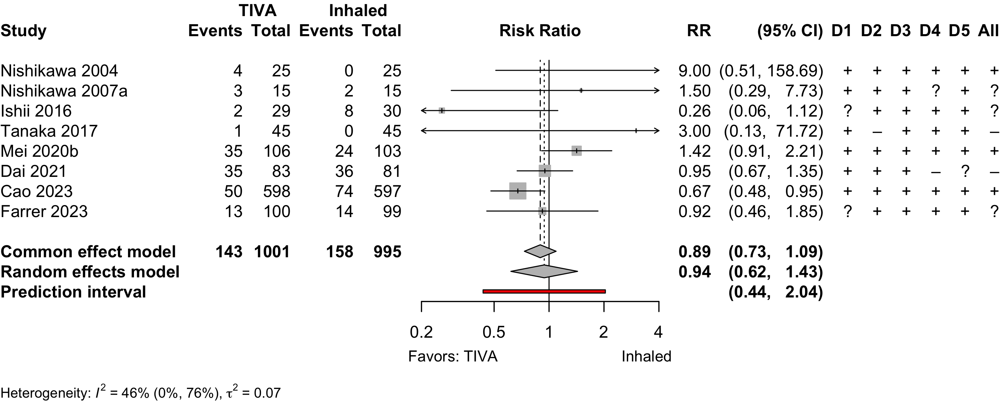
Risk of bias ratings: low +, some concerns ?, high – .
Continuity correction of 0.5 added to studies with no events in one arm.
Nonrandomized
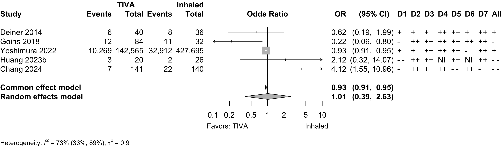
Note: adjusted odds ratios pooled from Yoshimura 2022 (propensity matching); Goins 2018 and Chang 2022 (multivariable adjustment).
Delayed Neurocognitive Recovery
| Study | N | Comparator | Preop | Instrument | Dayc | Delayed Neurocognitive Recovery | |||||
|---|---|---|---|---|---|---|---|---|---|---|---|
| MMSEa | MMSE | MoCA | Multipleb | NS | N (%) | 0 — 100% | RR (95% CI) | ||||
| Randomized Clinical Trial — Gastrointestinal/Abdominal | |||||||||||
| 99 | Inhaled | 25.0 (1.7) |
✓d |
7 | 33 (33.3) | — | |||||
| 101 | TIVA | 24.6 (1.7) |
30 (29.7) | 0.89 (0.59-1.34) | |||||||
| 50 | Inhaled | 28.9 (1.4) |
✓e,f |
3 | 10 (20.0) | — | |||||
| 50 | Inhaled | 29.4 (1.9) |
15 (30.0) | 1.50 (0.75-3.01) | |||||||
| 50 | TIVA | 29.2 (1.5) |
2 (4.0) | 0.20 (0.05-0.87) | |||||||
| 272 | Inhaled | 29 {28-30} |
✓d |
7 | 51 (18.8) | — | |||||
| 272 | TIVA | 29 {28-30} |
41 (15.1) | 0.80 (0.55-1.17) | |||||||
| Randomized Clinical Trial — Thoracic | |||||||||||
| 72 | Inhaled | 30 {28-30} |
✓f |
5 | 24 (33.3) | — | |||||
| 72 | TIVA | 30 {29-30} |
16 (22.2) | 0.67 (0.39-1.15) | |||||||
| 190 | Inhaled | 28.3 (1.7) |
✓d |
7 | 44 (23.2) | — | |||||
| 189 | TIVA | 28.2 (1.7) |
28 (14.8) | 0.64 (0.42-0.98) | |||||||
| Randomized Clinical Trial — Spine | |||||||||||
| 70 | Inhaled | ✓g |
7 | 23 (32.9) | — | ||||||
| 70 | TIVA | 10 (14.3) | 0.43 (0.22-0.84) | ||||||||
| Randomized Clinical Trial — Vascular | |||||||||||
| 97 | Inhaled | ✓h |
30 | 6 (6.2) | — | ||||||
| 96 | TIVA | 4 (4.2) | 0.67 (0.20-2.31) | ||||||||
| Prospective Cohort — Orthopedic | |||||||||||
| 119 | Inhaled | 28.1 (1.2) |
✓d |
7 | 24 (20.2) | — | |||||
| 160 | TIVA | 28.2 (1.3) |
24 (15.0) | 0.74 (0.44-1.24) | |||||||
| MMSE: Mini-Mental State Exam; MoCA: MoCA: Montreal Cognitive Assessment; NS: not specfied; RR: risk ratio; CI: confidence interval. | |||||||||||
| a Mean Med (SD)[Range]{IQR}. | |||||||||||
| b Failed 2 or more tests. | |||||||||||
| c Day of assessment. | |||||||||||
| d Z ≥1.96. | |||||||||||
| e Digit Span Test; Digit Symbol Test; Grooved Pegboard Test; Mini-Mental State Examination; Rey Auditory Verbal Learning; Trail Marking Test A. | |||||||||||
| f Difference from baseline >20%. | |||||||||||
| g Difference from baseline ≥1 SD. | |||||||||||
| h Cognitive dysfunction without specified evaluation. | |||||||||||
Pooled
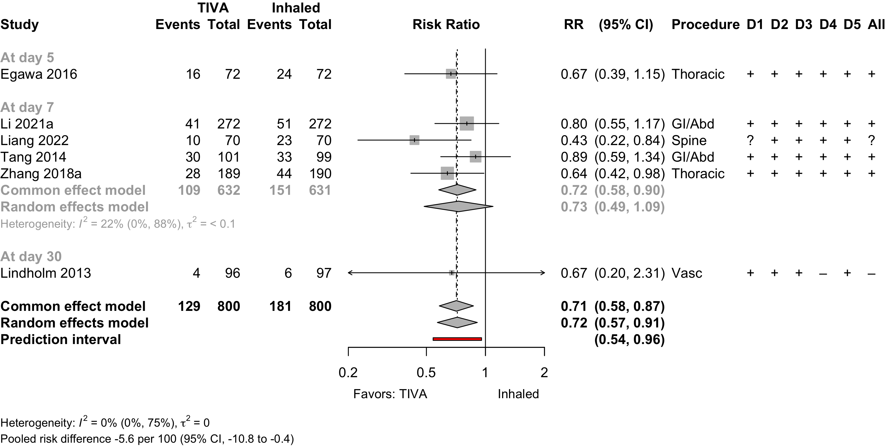
Risk of bias ratings: low +, some concerns ?, high – .
Four trials conducted in China and one each in Norway (Lindholm 2013) and Japan (Egawa 2016).
Including Geng 2017 assessments at day 3 — RR 0.66 (95% CI, 0.54–0.81; prediction interval, 0.54–0.91)

Postoperative Neurocognitive Disorder
| Study | N | Comparator | Preop | Instrument | Dayb | Neurocognitive Disorder | |||||
|---|---|---|---|---|---|---|---|---|---|---|---|
| MMSEa | MMSE | MoCA | Other | NS | N (%) | 0 — 100% | RR (95% CI) | ||||
| Prospective Cohort | |||||||||||
| 34 | Inhaled | ✓c | 90 | 9 (26.5) | — | ||||||
| 43 | TIVA | 12 (27.9) | 1.05 (0.50-2.21) | ||||||||
| 115 | Inhaled | 28.1 (1.2) |
✓d | 90 | 10 (8.7) | — | |||||
| 161 | TIVA | 28.2 (1.3) |
17 (10.6) | 1.21 (0.58-2.55) | |||||||
| Retrospective Cohort | |||||||||||
| 58 | Inhaled | ✓e,f | 180 | 13 (22.4) | — | ||||||
| 48 | TIVA | 11 (22.9) | 1.02 (0.50-2.07) | ||||||||
| Mini-Mental State Exam; MoCA: Montreal Cognitive Assessment; NS: not stated; RR: risk ratio. | |||||||||||
| Pooled RR 1.10 (95% CI, 0.72–1.68) | |||||||||||
| a Mean Med (SD)[Range]{IQR}. | |||||||||||
| b Day of assessment. | |||||||||||
| c Uniform Data Set of the Alzheimer’s Disease Centers. | |||||||||||
| d Z ≥1.96. | |||||||||||
| e Digit Span Test; Grooved Pegboard Test; Mini-Mental State Examination; Rey Auditory Verbal Learning; Trail Marking Test A; Trail Making Test B. | |||||||||||
| f Failed 2 or more tests. | |||||||||||
Pooled
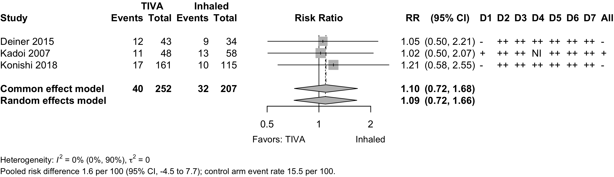
Physical Function
No studies
Complications
| Study | N | Arm | Agea | Surgery | N (%) | 0 – 100% | RD OR (95% CI)b |
|---|---|---|---|---|---|---|---|
| Myocardial Infarction – Randomized Clinical Trial | |||||||
| 44 | Inhaled | 65.0 (11.8) |
Various | 0 (0.0) | — | ||
| 44 | TIVA | 64.0 (12.2) |
0 (0.0) | 0.00% (-4.33, 4.33) | |||
| 97 | Inhaled | 69.0 (9.0) |
Vascular | 5 (5.2) | — | ||
| 96 | TIVA | 67.0 (9.0) |
3 (3.1) | -2.03% (-7.64, 3.58) | |||
| Myocardial Infarction – Retrospective Cohort | |||||||
| 5,325 | Inhaled | 64.9 |
Cardiac | 2,076 (39.0) | — | ||
| 5,210 | TIVA | 64.7 |
1,891 (36.3) | -2.69% (-4.54, -0.84) | |||
| 1,202 | Inhaled | 62.7 (13.7) |
Various | 15 (1.2) | — | ||
| 1,374 | TIVA | 65.6 (12.8) |
6 (0.4) | -0.81% (-1.53, -0.09) | |||
| 8,722 | Inhaled | 71.0 {63-78} |
GI/Abd | 82 (0.9) | — | ||
| 8,722 | TIVA | 71.0 {64-77} |
88 (1.0) | 0.93 (0.69—1.26) | |||
| 427,695 | Inhaled | 76.3 |
Various | 6,717 (1.6) | — | ||
| 142,565 | TIVA | 76.6 |
2,039 (1.4) | 0.91 (0.86—0.96) | |||
| 26 | Inhaled | 85.6 (7.8) |
Ortho | 3 (11.5) | — | ||
| 20 | TIVA | 83.8 (9.1) |
0 (0.0) | -11.54% (-25.79, 2.71) | |||
| Cardiac Arrest – Randomized Clinical Trial | |||||||
| 597 | Inhaled | 71.0 [65-88] |
Various | 1 (0.2) | — | ||
| 598 | TIVA | 72.0 [65-88] |
3 (0.5) | 0.33% (-0.32, 0.99) | |||
| Cardiac Arrest – Retrospective Cohort | |||||||
| 1,202 | Inhaled | 62.7 (13.7) |
Various | 0 (0.0) | — | ||
| 1,374 | TIVA | 65.6 (12.8) |
2 (0.1) | 0.15% (-0.11, 0.40) | |||
| Bradycardia – Randomized Clinical Trial | |||||||
| 32 | Inhaled | 77.0 (7.0) |
Ophtho | 1 (3.1) | — | ||
| 32 | Inhaled | 76.0 (6.0) |
4 (12.5) | — | |||
| 32 | TIVA | 74.0 (7.0) |
8 (25.0) | 17.19% (0.81, 33.57)d | |||
| 15 | Inhaled | 70.9 (6.5) |
GI/Abd | 2 (13.3) | — | ||
| 15 | TIVA | 71.2 (5.3) |
0 (0.0) | -13.33% (-33.06, 6.40) | |||
| 190 | Inhaled | 72.4 (5.6) |
Thoracic | 8 (4.2) | — | ||
| 189 | TIVA | 72.8 (5.5) |
6 (3.2) | -1.04% (-4.83, 2.76) | |||
| 31 | Inhaled | 65.5 (16.2) |
Thoracic | 0 (0.0) | — | ||
| 31 | TIVA | 68.3 (13.5) |
1 (3.2) | 3.23% (-5.27, 11.72) | |||
| Bradycardia – Nonrandomized Trial | |||||||
| 116 | Inhaled | 63.4 (17.1) |
Thoracic | 1 (0.9) | — | ||
| 149 | TIVA | 67.2 (15.1) |
5 (3.4) | 2.49% (-0.85, 5.84) | |||
| Hypotension – Randomized Clinical Trial | |||||||
| 31 | Inhaled | 65.5 (16.2) |
Thoracic | 3 (9.7) | — | ||
| 31 | TIVA | 68.3 (13.5) |
1 (3.2) | -6.45% (-18.58, 5.67) | |||
| 597 | Inhaled | 71.0 [65-88] |
Various | 101 (16.9) | — | ||
| 598 | TIVA | 72.0 [65-88] |
97 (16.2) | -0.70% (-4.91, 3.52) | |||
| Hypotension – Nonrandomized Trial | |||||||
| 116 | Inhaled | 63.4 (17.1) |
Thoracic | 11 (9.5) | — | ||
| 149 | TIVA | 67.2 (15.1) |
5 (3.4) | -6.13% (-12.19, -0.06) | |||
| Hypotension – Retrospective Cohort | |||||||
| 140 | Inhaled | 72.9 (4.7) |
Spine | 122 (87.1) | — | ||
| 141 | TIVA | 72.4 (4.5) |
123 (87.2) | 0.09% (-7.72, 7.91) | |||
| Other Cardiac – Randomized Clinical Trial | |||||||
| 44 | Inhaled | 65.0 (11.8) |
Various | 1 (2.3) | — | ||
| 44 | TIVA | 64.0 (12.2) |
1 (2.3) | 0.00% (-6.23, 6.23) | |||
| 81 | Inhaled | 72.0 (7.0) |
Various | 2 (2.5) | — | ||
| 83 | TIVA | 73.0 (8.0) |
2 (2.4) | -0.06% (-4.78, 4.66) | |||
| 597 | Inhaled | 71.0 [65-88] |
Various | 9 (1.5) | — | ||
| 598 | TIVA | 72.0 [65-88] |
13 (2.2) | 0.67% (-0.86, 2.19) | |||
| Stroke – Randomized Clinical Trial | |||||||
| 597 | Inhaled | 71.0 [65-88] |
Various | 3 (0.5) | — | ||
| 598 | TIVA | 72.0 [65-88] |
3 (0.5) | -0.00% (-0.80, 0.80) | |||
| Stroke – Retrospective Cohort | |||||||
| 8,722 | Inhaled | 71.0 {63-78} |
GI/Abd | 39 (0.4) | — | ||
| 8,722 | TIVA | 71.0 {64-77} |
34 (0.4) | 1.15 (0.72—1.83) | |||
| Acute Kidney Injury – Randomized Clinical Trial | |||||||
| 597 | Inhaled | 71.0 [65-88] |
Various | 36 (6.0) | — | ||
| 598 | TIVA | 72.0 [65-88] |
38 (6.4) | 0.32% (-2.41, 3.06) | |||
| Acute Kidney Injury – Retrospective Cohort | |||||||
| 1,477 | Inhaled | 65.0 (10.4) |
Thoracic | 71 (4.8) | — | ||
| 1,395 | TIVA | 65.0 (10.0) |
69 (4.9) | 0.96 (0.53—1.71) | |||
| 386 | Inhaled | 65.5 (14.8) |
Various | 47 (12.2) | — | ||
| 100 | TIVA | 65.6 (14.9) |
7 (7.0) | 0.44 (0.18—0.95) | |||
| 427,695 | Inhaled | 76.3 |
Various | 2,123 (0.5) | — | ||
| 142,565 | TIVA | 76.6 |
706 (0.5) | 1.00 (0.91—1.09) | |||
| 26 | Inhaled | 85.6 (7.8) |
Ortho | 4 (15.4) | — | ||
| 20 | TIVA | 83.8 (9.1) |
1 (5.0) | -10.38% (-27.22, 6.45) | |||
| 140 | Inhaled | 72.9 (4.7) |
Spine | 2 (1.4) | — | ||
| 141 | TIVA | 72.4 (4.5) |
2 (1.4) | -0.01% (-2.78, 2.76) | |||
| Pneumonia – Randomized Clinical Trial | |||||||
| 97 | Inhaled | 69.0 (9.0) |
Vascular | 13 (13.4) | — | ||
| 96 | TIVA | 67.0 (9.0) |
9 (9.4) | -4.03% (-12.97, 4.91) | |||
| 153 | Inhaled | 66.0 [19-93] |
GI/Abd | 8 (5.2) | — | ||
| 154 | TIVA | 65.0 [23-89] |
7 (4.5) | -0.68% (-5.51, 4.14) | |||
| 272 | Inhaled | 65.0 {62-69} |
GI/Abd | 1 (0.4) | — | ||
| 272 | TIVA | 64.0 {62-68} |
0 (0.0) | -0.37% (-1.38, 0.65) | |||
| Pneumonia – Retrospective Cohort | |||||||
| 8,722 | Inhaled | 71.0 {63-78} |
GI/Abd | 303 (3.5) | — | ||
| 8,722 | TIVA | 71.0 {64-77} |
275 (3.2) | 1.11 (0.94—1.31) | |||
| 26 | Inhaled | 85.6 (7.8) |
Ortho | 10 (38.5) | — | ||
| 20 | TIVA | 83.8 (9.1) |
2 (10.0) | -28.46% (-51.32, -5.60) | |||
| Pneumothorax – Randomized Clinical Trial | |||||||
| 597 | Inhaled | 71.0 [65-88] |
Various | 3 (0.5) | — | ||
| 598 | TIVA | 72.0 [65-88] |
6 (1.0) | 0.50% (-0.48, 1.48) | |||
| Pulmonary Embolism – Randomized Clinical Trial | |||||||
| 153 | Inhaled | 66.0 [19-93] |
GI/Abd | 0 (0.0) | — | ||
| 154 | TIVA | 65.0 [23-89] |
2 (1.3) | 1.30% (-0.88, 3.48) | |||
| 597 | Inhaled | 71.0 [65-88] |
Various | 1 (0.2) | — | ||
| 598 | TIVA | 72.0 [65-88] |
1 (0.2) | -0.00% (-0.46, 0.46) | |||
| Pulmonary Embolism – Retrospective Cohort | |||||||
| 1,202 | Inhaled | 62.7 (13.7) |
Various | 0 (0.0) | — | ||
| 1,374 | TIVA | 65.6 (12.8) |
2 (0.1) | 0.15% (-0.11, 0.40) | |||
| 8,722 | Inhaled | 71.0 {63-78} |
GI/Abd | 32 (0.4) | — | ||
| 8,722 | TIVA | 71.0 {64-77} |
22 (0.3) | 1.46 (0.85—2.54) | |||
| 427,695 | Inhaled | 76.3 |
Various | 432 (0.1) | — | ||
| 142,565 | TIVA | 76.6 |
185 (0.1) | 1.29 (1.06—1.53) | |||
| Pulmonary Edema – Retrospective Cohort | |||||||
| 1,202 | Inhaled | 62.7 (13.7) |
Various | 3 (0.2) | — | ||
| 1,374 | TIVA | 65.6 (12.8) |
0 (0.0) | -0.25% (-0.57, 0.07) | |||
| 427,695 | Inhaled | 76.3 |
Various | 0 (0.0) | — | ||
| 142,565 | TIVA | 76.6 |
0 (0.0) | — | |||
| Respiratory Failure – Randomized Clinical Trial | |||||||
| 97 | Inhaled | 69.0 (9.0) |
Vascular | 9 (9.3) | — | ||
| 96 | TIVA | 67.0 (9.0) |
6 (6.2) | -3.03% (-10.56, 4.51) | |||
| 597 | Inhaled | 71.0 [65-88] |
Various | 6 (1.0) | — | ||
| 598 | TIVA | 72.0 [65-88] |
8 (1.3) | 0.33% (-0.89, 1.55) | |||
| Respiratory Failure – Retrospective Cohort | |||||||
| 8,722 | Inhaled | 71.0 {63-78} |
GI/Abd | 216 (2.5) | — | ||
| 8,722 | TIVA | 71.0 {64-77} |
236 (2.7) | 0.91 (0.76—1.10) | |||
| 427,695 | Inhaled | 76.3 |
Various | 1,487 (0.3) | — | ||
| 142,565 | TIVA | 76.6 |
420 (0.3) | 0.85 (0.76—0.94) | |||
| RD: risk difference; OR: odds ratio; Ophtho: ophthalmologic; GI: gastointestinal; GI: gastrointestinal; Abd: abdominal. | |||||||
| a Mean Med (SD)[Range]{IQR}. | |||||||
| b Odds ratios for propensity-matched studies (risk differences accounting for matching were not reported). | |||||||
| c Definition not reported. | |||||||
| d Compared with combined inhalation arms (differed only in induction agents). | |||||||
| e <50 bpm. | |||||||
| f <50 bpm or ↓30% and require chronotropic agent. | |||||||
| g Systolic blood pressure <90 mm Hg or a decrease of >30% from baseline. | |||||||
| h Atrial fibrillation. | |||||||
| i Cardiac dysfunction. | |||||||
| j Arrhythmia. | |||||||
Pooled
Note: given the limited number of randomized studies and absence of convincing evidence for any complication, we pooled all designs without detriment to any strength of evidence rating. When odds ratios were pooled, approximate risk differences were calculated based on the event rate across inhaled anesthetic arms and the corresponding risk ratio derived from the odds ratio.
Myocardial Infarction
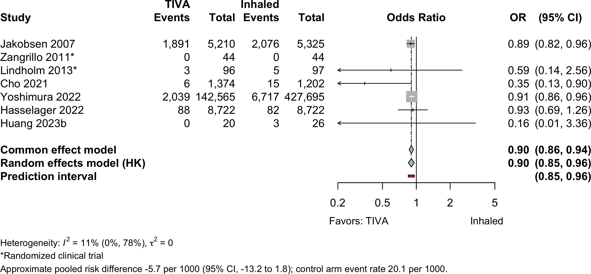
Cardiac Arrest
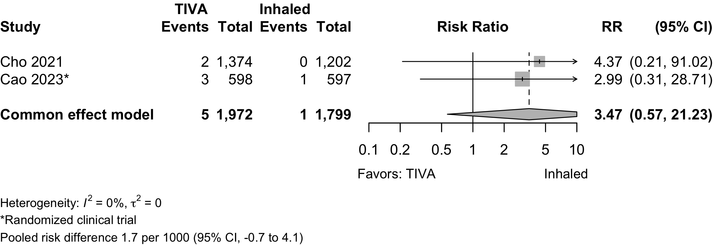
Bradycardia
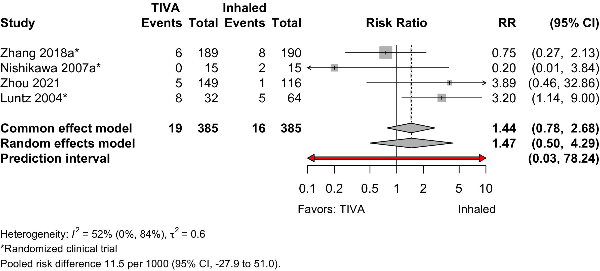
Hypotension
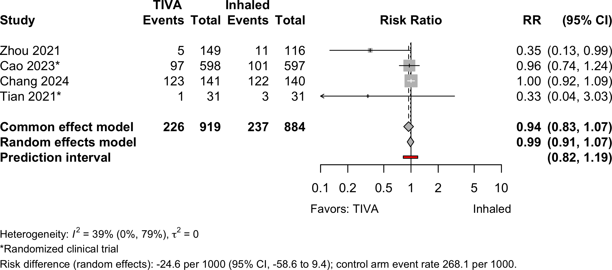
Stroke
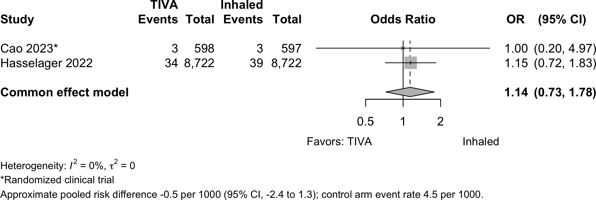
Acute Kidney Injury
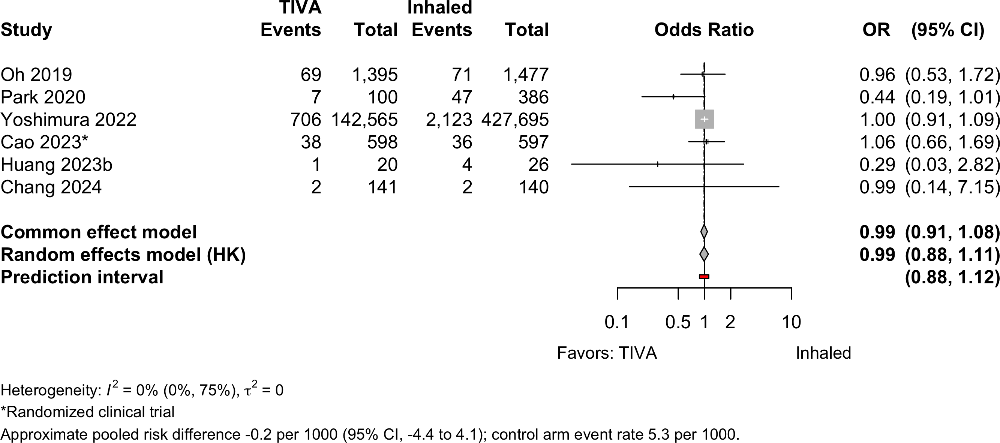
Pneumonia
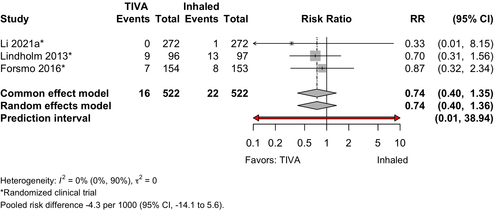
Pulmonary Embolism

Respiratory Failure
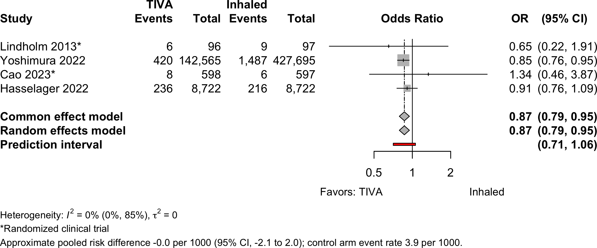
Patient Satisfaction
| Study | N | Anesth | Surgery | ASA | Agea | N (%) | 0 – 100% | RD (95% CI) |
|---|---|---|---|---|---|---|---|---|
| PS | ||||||||
| 62 | Inhaled | Ophthalmologic | 123 | 76.0 (6.0) |
41 (66.1)b | — | ||
| 62 | TIVA | 77.0 (6.0) |
58 (93.5)b | 27.4% (14.1, 40.7) | ||||
| 64 | Inhaledc | Ophthalmologic | 123 | 77.0 (7.0) |
15 (46.9)d | — | ||
| 32 | TIVA | 74.0 (7.0) |
23 (71.9)d | 17.2% (-2.6, 37.0) | ||||
| 15 | Inhaled | GI/Abdominal | 12 | 70.9 (6.5) |
6 (40.0)e | — | ||
| 15 | TIVA | 71.2 (5.3) |
9 (60.0)e | 20.0% (-15.1, 55.1) | ||||
| TIVA: total intravenous anesthesia; ASA PS: ASA Physical Status; RD: risk difference. | ||||||||
| a Mean (SD). | ||||||||
| b Completely satisfied. | ||||||||
| c Inhaled arms combined. | ||||||||
| d Highly satisfied. | ||||||||
| e Very satisfied. | ||||||||
Pooled
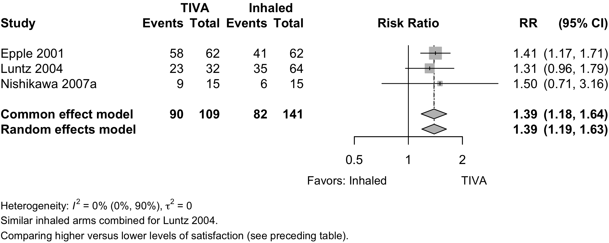
Length of Stay
| Study | N | Anesth | PSa | Ageb | LOSb | 0 – 35 days | Country |
|---|---|---|---|---|---|---|---|
| Randomized Clinical Trial - Cardiac | |||||||
| 48 | Inhaled | 34 | 64.5 (9.4) |
13.8 (4.6) |
South Korea | ||
| 47 | TIVA | 34 | 66.0 (7.3) |
12.6 (3.3) |
|||
| Randomized Clinical Trial - Thoracic | |||||||
| 190 | Inhaled | 123 | 72.4 (5.6) |
8.0 {6-11} |
China | ||
| 189 | TIVA | 123 | 72.8 (5.5) |
9.0 {6-13} |
|||
| Randomized Clinical Trial - Gastrointestinal/Abdominal | |||||||
| 153 | Inhaled | 123 | 66.0 [19-93] |
8.0 [2-48] |
Norway | ||
| 154 | TIVA | 123 | 65.0 [23-89] |
5.0 [2-50] |
|||
| 272 | Inhaled | NR | 65.0 {62-69} |
14.0 {11-16} |
China | ||
| 272 | TIVA | NR | 64.0 {62-68} |
15.0 {12-17} |
|||
| Randomized Clinical Trial - Various | |||||||
| 81 | Inhaled | 234 | 72.0 (7.0) |
8.0 (9.9) |
China | ||
| 83 | TIVA | 234 | 73.0 (8.0) |
9.0 (10.8) |
|||
| 597 | Inhaled | 123 | 71.0 [65-88] |
10.0 {7-14} |
China | ||
| 598 | TIVA | 123 | 72.0 [65-88] |
10.0 {7-14} |
|||
| Retrospective Cohort - Cardiac | |||||||
| 32 | Inhaled | NR | 78.3 (9.0) |
5.9 (3.3) |
USA | ||
| 84 | TIVA | NR | 79.6 (8.7) |
3.8 (3.3) |
|||
| Retrospective Cohort - Orthopedic | |||||||
| 5,140 | Inhaled | NR | 74.4 (7.4) |
31.4 (14.4) |
Japan | ||
| 5,140 | TIVA | NR | 74.5 (7.2) |
32.5 (18.4) |
|||
| 26 | Inhaled | 4 | 85.6 (7.8) |
14.5 (17.8) |
Taiwan | ||
| 20 | TIVA | 4 | 83.8 (9.1) |
8.8 (3.8) |
|||
| Retrospective Cohort - Various | |||||||
| 427,695 | Inhaled | NR | 76.3 |
21.0 (21.0) |
Japan | ||
| 142,565 | TIVA | NR | 76.6 |
21.0 (21.8) |
|||
| NR: not reported | |||||||
| a ASA Physical Status. | |||||||
| b Mean Med (SD)[Range]{IQR}. | |||||||
Pooled
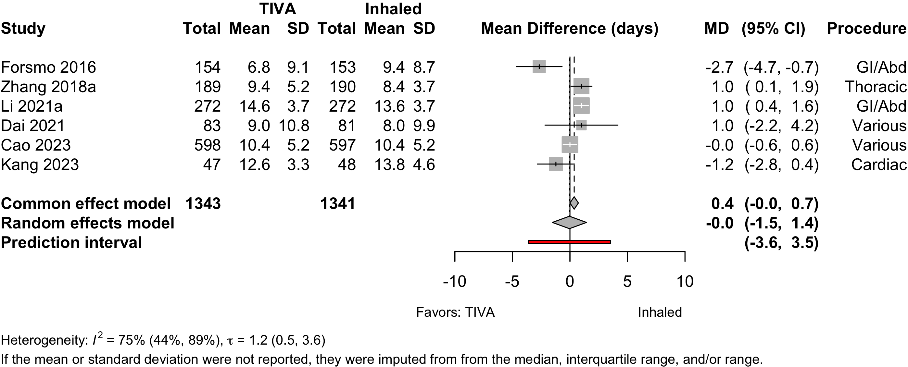
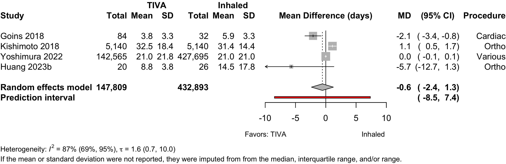
Discharge Location
| Study | N | Arm | Agea | Country | Discharge to Institution | RR (95% CI) | |
|---|---|---|---|---|---|---|---|
| N (%) | 0 — 100% | ||||||
| Retrospective Cohort — Orthopedic | |||||||
| 26 | Inhaled | 85.6 (7.8) |
Taiwan | 8 (30.8) | |||
| 20 | TIVA | 83.8 (9.1) |
9 (45.0) | 1.46 (0.69-3.11) | |||
| Gen: general; Neur: neuraxial; RR: risk ratio. | |||||||
| a Mean Med (SD)[Range]{IQR}. | |||||||
Mortality
Table 17. Reported in-hospital, 30-day, and 1-year mortality in randomized clinical trials.
| Study | N | Arm | Surgery | ASA | Agea | Mortality | RD (95% CI) | |
|---|---|---|---|---|---|---|---|---|
| PS | N (%) | 0 - 100% | ||||||
| Hospital | ||||||||
| 81 | Inhaled | Various | 234 | 72.0 (7.0) |
2 (2.5) | — | ||
| 83 | TIVA | 73.0 (8.0) |
1 (1.2) | -1.3% (-5.4, 2.9) | ||||
| 30-day | ||||||||
| 44 | Inhaled | Various | 1234 | 65.0 (11.8) |
0 (0.0) | — | ||
| 44 | TIVA | 64.0 (12.2) |
1 (2.3) | 2.3% (-3.8, 8.3) | ||||
| 97 | Inhaled | Vasc | 234 | 69.0 (9.0) |
4 (4.1) | — | ||
| 96 | TIVA | 67.0 (9.0) |
4 (4.2) | 0.0% (-5.6, 5.7) | ||||
| 153 | Inhaled | GI/Abd | 123 | 66.0 [19-93] |
0 (0.0) | — | ||
| 154 | TIVA | 65.0 [23-89] |
3 (1.9) | 1.9% (-0.6, 4.5) | ||||
| 190 | Inhaled | Thoracic | 123 | 72.4 (5.6) |
0 (0.0) | — | ||
| 189 | TIVA | 72.8 (5.5) |
0 (0.0) | 0.0% (-1.0, 1.0) | ||||
| 81 | Inhaled | Various | 234 | 72.0 (7.0) |
4 (4.9) | — | ||
| 83 | TIVA | 73.0 (8.0) |
3 (3.6) | -1.3% (-7.5, 4.9) | ||||
| 1-year | ||||||||
| 44 | Inhaled | Various | 1234 | 65.0 (11.8) |
1 (2.3) | — | ||
| 44 | TIVA | 64.0 (12.2) |
2 (4.5) | 2.3% (-5.3, 9.8) | ||||
| ASA PS: American Society of Anesthesiologists Physical Status; Vasc: vascular; GI/Abd: gastrointestinal/abdominal; RD: risk difference; NR: not reported. | ||||||||
| a Mean Med (SD)[Range]{IQR}. | ||||||||
Table 18. Reported in-hospital and 30-day mortality in nonrandomized designs (all retrospective cohort studies).
| Study | N | Arm | Surgery | ASA | Agea | Mortality | RD OR (95% CI)b | |
|---|---|---|---|---|---|---|---|---|
| PS | N (%) | 0 - 100% | ||||||
| Hospital | ||||||||
| 5,325 | Inhaled | Cardiac | NR | 64.9 |
116 (2.2) | — | ||
| 5,210 | TIVA | 64.7 |
172 (3.3) | 1.1% (0.5, 1.7) | ||||
| 386 | Inhaled | Various | 1234 | 65.5 (14.8) |
52 (13.5) | — | ||
| 100 | TIVA | 65.6 (14.9) |
22 (22.0) | 1.78 (1.08—2.92) | ||||
| 427,695 | Inhaled | Various | NR | 76.3 |
4,936 (1.2) | — | ||
| 142,565 | TIVA | 76.6 |
1,665 (1.2) | 1.01 (0.96—1.07) | ||||
| 30-day | ||||||||
| 5,325 | Inhaled | Cardiac | NR | 64.9 |
151 (2.8) | 0.7% (0.1, 1.3) | ||
| 5,210 | TIVA | 64.7 |
172 (3.3) | 1.1% (0.5, 1.7) | ||||
| 32 | Inhaled | Cardiac | NR | 78.3 (9.0) |
2 (6.2) | — | ||
| 84 | TIVA | 79.6 (8.7) |
0 (0.0) | -6.2% (-15.4, 2.9) | ||||
| 386 | Inhaled | Various | 1234 | 65.5 (14.8) |
35 (9.1) | — | ||
| 100 | TIVA | 65.6 (14.9) |
17 (17.0) | 2.6 (1.14—5.93) | ||||
| 1,202 | Inhaled | Various | 34 | 62.7 (13.7) |
51 (4.2) | — | ||
| 1,374 | TIVA | 65.6 (12.8) |
22 (1.6) | -2.6% (-4.0, -1.3) | ||||
| 8,722 | Inhaled | GI/Abd | 1234 | 71.0 {63-78} |
278 (3.2) | — | ||
| 8,722 | TIVA | 71.0 {64-77} |
280 (3.2) | 0.99 (0.84—1.18) | ||||
| 26 | Inhaled | Ortho | 4 | 85.6 (7.8) |
1 (3.8) | — | ||
| 20 | TIVA | 83.8 (9.1) |
1 (5.0) | 1.2% (-10.9, 13.2) | ||||
| 1-year | ||||||||
| 26 | Inhaled | Ortho | 4 | 85.6 (7.8) |
3 (11.5) | 7.7% (-6.6, 22.0) | ||
| 20 | TIVA | 83.8 (9.1) |
3 (15.0) | 11.2% (-6.2, 28.5) | ||||
| ASA PS: American Society of Anesthesiologists Physical Status; RD: risk difference; GI: gastrointestinal; Abd: abdominal (includes hepatic); Various: more that one procedure category. | ||||||||
| a Mean Med (SD)[Range]{IQR}. | ||||||||
| b Odds ratios for studies reporting adjusted results (e.g., propensity matched). | ||||||||
Pooled
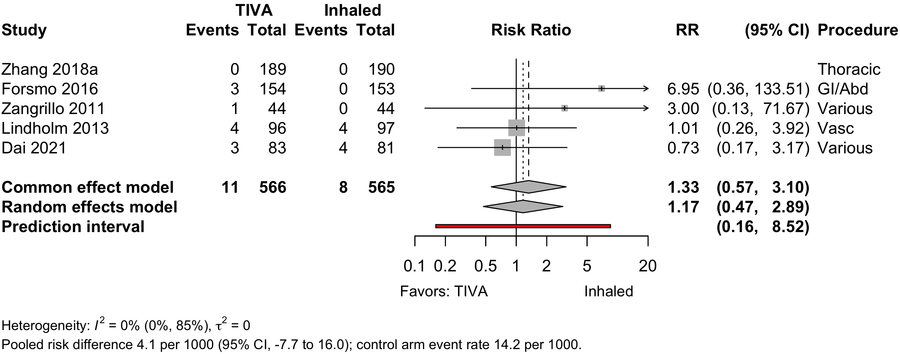
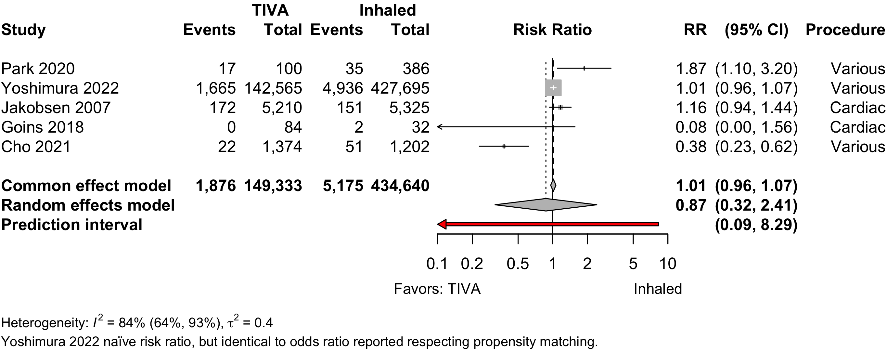
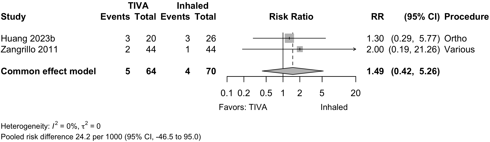
Risk of Bias
Randomized
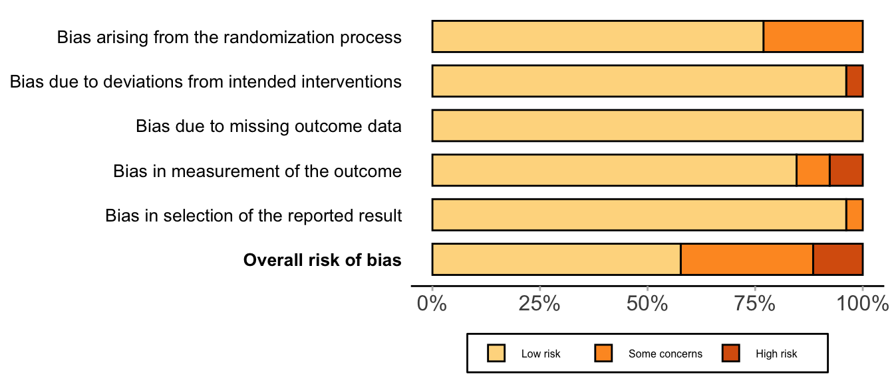
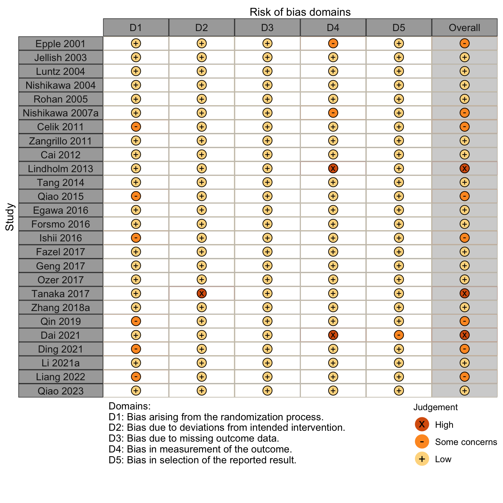
Nonrandomized
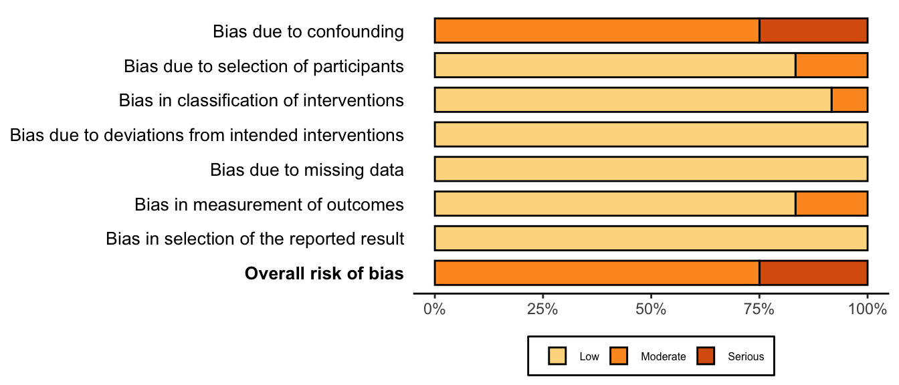
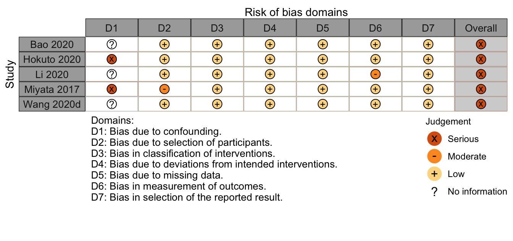
References
1.
Cai Y, Hu H, Liu P, et al. Association between the apolipoprotein E4 and postoperative cognitive dysfunction in elderly patients undergoing intravenous anesthesia and inhalation anesthesia. Anesthesiology. 2012;116(1):84-93. doi:10.1097/ALN.0b013e31823da7a2
2.
Cao SJ, Zhang Y, Zhang YX, et al. Delirium in older patients given propofol or sevoflurane anaesthesia for major cancer surgery: A multicentre randomised trial. Br J Anaesth. 2023;131(2):253-265. doi:10.1016/j.bja.2023.04.024
3.
Cao SJ, Zhang Y, Zhang YX, et al. Delirium in older patients given propofol or sevoflurane anaesthesia for major cancer surgery: A multicentre randomised trial. Br J Anaesth. Published online 2023. doi:10.1016/j.bja.2023.04.024
4.
Celik JB, Topal A, Erol A, Guven S, Kara I. A comparison of recovery characteristics of sevoflurane and propofol remifentanil anesthesia in geriatric patients. Turkish J Geriatr. 2011;14(3):208-213.
5.
Chang JE, Min SW, Kim H, et al. Association between anesthetics and postoperative delirium in elderly patients undergoing spine surgery: Propofol versus sevoflurane. Global Spine Journal. Published online 2022:21925682221110828. doi:10.1177/21925682221110828
6.
Cho HB, Kim MG, Park SY, et al. The influence of propofol-based total intravenous anesthesia on postoperative outcomes in end-stage renal disease patients: A retrospective observation study. PLoS One. 2022;16(7):e0254014. doi:10.1371/journal.pone.0254014
7.
Dai Z, Lin M, Li Y, et al. Sevoflurane-remifentanil versus propofol-remifentanil anesthesia during noncardiac surgery for patients with coronary artery disease - a prospective study between 2016 and 2017 at a single center. Med Sci Monit. 2022;27:e929835. doi:10.12659/MSM.929835
8.
Deiner S, Lin HM, Bodansky D, Silverstein J, Sano M. Do stress markers and anesthetic technique predict delirium in the elderly? Dement Geriatr Cogn Disord. 2014;38(5-6):366-374. doi:10.1159/000363762
9.
Deiner S, Luo X, Silverstein JH, Sano M. Can intraoperative processed EEG predict postoperative cognitive dysfunction in the elderly? Clin Ther. 2015;37(12):2700-2705. doi:10.1016/j.clinthera.2015.11.004
10.
Ding DF, Wang P, Jiang YX, Zhang XP, Shi W, Luo YW. Effects of apolipoprotein epsilon epsilon4 allele on early postoperative cognitive dysfunction after anesthesia. Anaesthesist. 2022;70(Suppl 1):60-67. doi:10.1007/s00101-021-00972-1
11.
Egawa J, Inoue S, Nishiwada T, et al. Effects of anesthetics on early postoperative cognitive outcome and intraoperative cerebral oxygen balance in patients undergoing lung surgery: A randomized clinical trial. Can J Anaesth. 2016;63(10):1161-1169. doi:10.1007/s12630-016-0700-4 10.1007/s12630-016-0700-4. Epub 2016 Jul 13.
12.
Epple J, Kubitz J, Schmidt H, et al. Comparative analysis of costs of total intravenous anaesthesia with propofol and remifentanil vs. Balanced anaesthesia with isoflurane and fentanyl. Eur J Anaesthesiol. 2001;18(1):20-28. doi:10.1046/j.1365-2346.2001.00764.x 10.1046/j.1365-2346.2001.00764.x.
13.
Farrer TJ, Monk TG, McDonagh DL, Martin G, Pieper CF, Koltai D. A prospective randomized study examining the impact of intravenous versus inhalational anesthesia on postoperative cognitive decline and delirium. Applied neuropsychology Adult. Published online 2023:1-7. doi:10.1080/23279095.2023.2246612
14.
Fazel MR, Kheirkhah P, Atoof F. Sevoflurane versus propofol anesthesia on early postoperative cognitive function in older adults: A randomized controlled trial. Middle East Journal of Anesthesiology. 2017;24(3):237-241. https://www.scopus.com/inward/record.uri?eid=2-s2.0-85044359450&partnerID=40&md5=02bec86eb3177f36f760ecb5b5b1d42d
15.
Forsmo HM, Pfeffer F, Rasdal A, et al. Compliance with enhanced recovery after surgery criteria and preoperative and postoperative counselling reduces length of hospital stay in colorectal surgery: Results of a randomized controlled trial. Colorectal Dis. 2022;18(6):603-611. doi:10.1111/codi.13253
16.
Geng YJ, Wu QH, Zhang RQ. Effect of propofol, sevoflurane, and isoflurane on postoperative cognitive dysfunction following laparoscopic cholecystectomy in elderly patients: A randomized controlled trial. J Clin Anesth. 2017;38:165-171. doi:10.1016/j.jclinane.2017.02.007 10.1016/j.jclinane.2017.02.007. Epub 2017 Feb 20.
17.
Goins AE, Smeltz A, Ramm C, et al. General anesthesia for transcatheter aortic valve replacement: Total intravenous anesthesia is associated with less delirium as compared to volatile agent technique. J Cardiothorac Vasc Anesth. 2018;32(4):1570-1577. doi:10.1053/j.jvca.2017.12.018
18.
Hasselager RP, Hallas J, Gögenur I. Inhalation anaesthesia compared with total intravenous anaesthesia and postoperative complications in colorectal cancer surgery: An observational registry-based study†. British Journal of Anaesthesia. 2022;129(3):416-426. doi:10.1016/j.bja.2022.03.019
19.
Huang YY, Hui CK, Lau NC, et al. Total intravenous anesthesia for geriatric hip fracture with severe systemic disease. Eur J Trauma Emerg Surg. 2023;49(5):2139-2145. doi:10.1007/s00068-023-02291-z
20.
Ishii K, Makita T, Yamashita H, et al. Total intravenous anesthesia with propofol is associated with a lower rate of postoperative delirium in comparison with sevoflurane anesthesia in elderly patients. J Clin Anesth. 2016;33:428-431. doi:10.1016/j.jclinane.2016.04.043 10.1016/j.jclinane.2016.04.043. Epub 2016 Jun 4.
21.
Jakobsen CJ, Berg H, Hindsholm KB, Faddy N, Sloth E. The influence of propofol versus sevoflurane anesthesia on outcome in 10,535 cardiac surgical procedures. J Cardiothorac Vasc Anesth. 2007;21(5):664-671. doi:10.1053/j.jvca.2007.03.002
22.
Jellish WS, Sheikh T, Baker WH, Louie EK, Slogoff S. Hemodynamic stability, myocardial ischemia, and perioperative outcome after carotid surgery with remifentanil/propofol or isoflurane/fentanyl anesthesia. J Neurosurg Anesthesiol. 2003;15(3):176-184. doi:10.1097/00008506-200307000-00004
23.
Kadoi Y, Goto F. Sevoflurane anesthesia did not affect postoperative cognitive dysfunction in patients undergoing coronary artery bypass graft surgery. Journal of Anesthesia. 2007;21(3):330-335. doi:10.1007/s00540-007-0537-7
24.
Kalimeris K, Kouni S, Kostopanagiotou G, et al. Cognitive function and oxidative stress after carotid endarterectomy: Comparison of propofol to sevoflurane anesthesia. Journal of Cardiothoracic and Vascular Anesthesia. 2013;27(6):1246-1252. doi:10.1053/j.jvca.2012.12.009
25.
Kang D, Kim M, Bae HB, Moon S, Kim J. Comparison of postoperative recovery between balanced and total intravenous anesthesia in patients undergoing off-pump coronary artery bypass (OPCAB) surgery: A prospective, single-blind randomized study. International Journal of Environmental Research and Public Health. 2023;20(3). doi:10.3390/ijerph20032310
26.
Kishimoto M, Yamana H, Inoue S, et al. Suspected periprosthetic joint infection after total knee arthroplasty under propofol versus sevoflurane anesthesia: A retrospective cohort study. Can J Anaesth. 2018;65(8):893-900. doi:10.1007/s12630-018-1139-6
27.
Konishi Y, Evered LA, Scott DA, Silbert BS. Postoperative cognitive dysfunction after sevoflurane or propofol general anaesthesia in combination with spinal anaesthesia for hip arthroplasty. Anaesth Intensive Care. 2018;46(6):596-600. doi:10.1177/0310057x1804600610
28.
Koo BW, Sim JB, Shin HJ, et al. Surgical site infection after colorectal surgery according to the main anesthetic agent: A retrospective comparison between volatile anesthetics and propofol. Korean J Anesthesiol. 2016;69(4):332-340. doi:10.4097/kjae.2016.69.4.332
29.
Li Y, Chen D, Wang H, et al. Intravenous versus volatile anesthetic effects on postoperative cognition in elderly patients undergoing laparoscopic abdominal surgery. Anesthesiology. 2021;134(3):381-394. doi:10.1097/aln.0000000000003680
30.
Liang Y, Xin X, Wang H, et al. A novel predictive strategy for the incidence of postoperative neurocognitive dysfunction in elderly patients with mild cognitive impairment. Front Aging Neurosci. 2022;14:985406. doi:10.3389/fnagi.2022.985406
31.
Lindholm EE, Aune E, Norén CB, et al. The anesthesia in abdominal aortic surgery (ABSENT) study: A prospective, randomized, controlled trial comparing troponin t release with fentanyl-sevoflurane and propofol-remifentanil anesthesia in major vascular surgery. Anesthesiology. 2013;119(4):802-812. doi:10.1097/ALN.0b013e31829bd883
32.
Luntz SP, Janitz E, Motsch J, Bach A, Martin E, Böttiger BW. Cost-effectiveness and high patient satisfaction in the elderly: Sevoflurane versus propofol anaesthesia. Eur J Anaesthesiol. 2004;21(2):115-122. doi:10.1017/s0265021504002066 10.1017/s0265021504002066.
33.
Mei X, Zheng HL, Li C, et al. The effects of propofol and sevoflurane on postoperative delirium in older patients: A randomized clinical trial study. Journal of Alzheimer’s Disease. 2020;76(4):1627-1636. doi:10.3233/JAD-200322
34.
Nishikawa K, Kimura S, Shimodate Y, Igarashi M, Namiki A. A comparison of intravenous-based and epidural-based techniques for anesthesia and postoperative analgesia in elderly patients undergoing laparoscopic cholecystectomy. J Anesth. 2007;21(1):1-6. doi:10.1007/s00540-006-0459-9
35.
Nishikawa K, Nakayama M, Omote K, Namiki A. Recovery characteristics and post-operative delirium after long-duration laparoscope-assisted surgery in elderly patients: Propofol-based vs. Sevoflurane-based anesthesia. Acta Anaesthesiol Scand. 2004;48(2):162-168. doi:10.1111/j.0001-5172.2004.00264.x
36.
Oh TK, Kim J, Han S, Kim K, Jheon S, Ji E. Effect of sevoflurane-based or propofol-based anaesthesia on the incidence of postoperative acute kidney injury: A retrospective propensity score-matched analysis. Eur J Anaesthesiol. 2019;36(9):649-655. doi:10.1097/eja.0000000000001020
37.
Özer E, Yilmaz R. Effect of different anesthetic techniques on mental outcome in elderly patients undergoing off-pump coronary artery bypass graft surgery. Turkiye Klinikleri Cardiovascular Sciences. 2017;29(1):17-22. doi:10.5336/cardiosci.2017-55853
38.
Park J, Lee SH, Lee JH, et al. Volatile versus total intravenous anesthesia for 30-day mortality following non-cardiac surgery in patients with preoperative myocardial injury. PLoS One. 2020;15(9):e0238661. doi:10.1371/journal.pone.0238661
39.
Qiao H, Chen J, Huang Y, et al. Early neurocognitive function with propofol or desflurane anesthesia after laser laryngeal surgery with low inspired oxygen. Laryngoscope. 2023;133(3):640-646. doi:10.1002/lary.30273
40.
Qiao Y, Feng H, Zhao T, Yan H, Zhang H, Zhao X. Postoperative cognitive dysfunction after inhalational anesthesia in elderly patients undergoing major surgery: The influence of anesthetic technique, cerebral injury and systemic inflammation. BMC Anesthesiol. 2015;15:154. doi:10.1186/s12871-015-0130-9
41.
Qin Y, Ni J, Kang L, Zhong Z, Wang L, Yin S. Sevoflurane effect on cognitive function and the expression of oxidative stress response proteins in elderly patients undergoing radical surgery for lung cancer. J Coll Physicians Surg Pak. 2019;29(1):12-15. doi:10.29271/jcpsp.2019.01.12
42.
Rohan D, Buggy DJ, Crowley S, et al. Increased incidence of postoperative cognitive dysfunction 24 hr after minor surgery in the elderly. Can J Anaesth. 2005;52(2):137-142. doi:10.1007/bf03027718
43.
Shimizu K, Hirose M, Mikami S, et al. Effect of anaesthesia maintained with sevoflurane and propofol on surgical site infection after elective open gastrointestinal surgery. J Hosp Infect. 2010;74(2):129-136. doi:10.1016/j.jhin.2009.10.011
44.
Tanaka P, Goodman S, Sommer BR, Maloney W, Huddleston J, Lemmens HJ. The effect of desflurane versus propofol anesthesia on postoperative delirium in elderly obese patients undergoing total knee replacement: A randomized, controlled, double-blinded clinical trial. J Clin Anesth. 2017;39:17-22. doi:10.1016/j.jclinane.2017.03.015
45.
Tang N, Ou C, Liu Y, Zuo Y, Bai Y. Effect of inhalational anaesthetic on postoperative cognitive dysfunction following radical rectal resection in elderly patients with mild cognitive impairment. J Int Med Res. 2014;42(6):1252-1261. doi:10.1177/0300060514549781 10.1177/0300060514549781. Epub 2014 Oct 22.
46.
Tian HT, Duan XH, Yang YF, Wang Y, Bai QL, Zhang X. Effects of propofol or sevoflurane anesthesia on the perioperative inflammatory response, pulmonary function and cognitive function in patients receiving lung cancer resection. European Review for Medical and Pharmacological Sciences. 2021;21(23):5515-5522. doi:10.26355/eurrev{\_}201712{\_}13943
47.
Villalobos D, Reese M, Wright MC, et al. Perioperative changes in neurocognitive and alzheimer’s disease-related cerebrospinal fluid biomarkers in older patients randomised to isoflurane or propofol for anaesthetic maintenance. British Journal of Anaesthesia. 2023;131(2):328-337. doi:10.1016/j.bja.2023.04.019
48.
Yang L, Chen Z, Xiang D. Effects of intravenous anesthesia with sevoflurane combined with propofol on intraoperative hemodynamics, postoperative stress disorder and cognitive function in elderly patients undergoing laparoscopic surgery. Pakistan Journal of Medical Sciences. 2022;38(7). doi:10.12669/pjms.38.7.5763
49.
Yoshimura M, Shiramoto H, Morimoto Y, Koga M. Comparison of total intravenous with inhalational anesthesia in terms of postoperative delirium and complications in older patients: A nationwide population-based study. J Anesth. 2022;36(6):698-706. doi:10.1007/s00540-022-03101-3
50.
Zangrillo A, Testa V, Aldrovandi V, et al. Volatile agents for cardiac protection in noncardiac surgery: A randomized controlled study. J Cardiothorac Vasc Anesth. 2011;25(6):902-907. doi:10.1053/j.jvca.2011.06.016
51.
Zhang Y, Shan GJ, Zhang YX, et al. Propofol compared with sevoflurane general anaesthesia is associated with decreased delayed neurocognitive recovery in older adults. Br J Anaesth. 2018;121(3):595-604. doi:10.1016/j.bja.2018.05.059
52.
Zhou Y, Xu T. Effect of propofol and sevoflurane on perioperative and postoperative outcomes in lung cancer patients after thoracoscopic surgery. Tropical Journal of Pharmaceutical Research. 2021;20(4):873-879. doi:10.4314/tjpr.v20i4.30